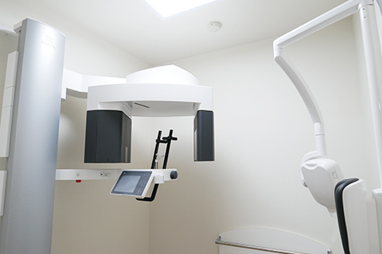

デジタルレントゲン・歯科用CT
平面的なレントゲンと立体的なCTの両方に対応。歯や顎の骨の状態、神経や血管の位置を把握しやすく、 診査・診断の参考にしています。
EQUIPMENT
診査・治療・衛生管理を支える設備を、分かりやすくご紹介します。
当院では、的確な診査と安心できる院内環境づくりのために、目的に合わせた機器を導入しています。
平面的なレントゲンと立体的なCTの両方に対応。歯や顎の骨の状態、神経や血管の位置を把握しやすく、 診査・診断の参考にしています。
複雑な器具にも対応できる高水準の滅菌器を採用。高温の蒸気で器具の内部まで処理し、 清潔な器具での診療に努めています。
※写真提供：白水貿易(株)
ペン型カメラで口腔内をスキャンし、歯列の情報をデータ化します。従来の型取りが苦手な方の負担を減らしやすく、 短時間での記録にも対応しやすい機器です。
一眼レフタイプとペンタイプの2種類を導入。お口全体の撮影と、細部の確認を使い分け、 治療説明に活用しています。
拡大視野で患部を確認し、肉眼では見えにくい部分まで丁寧に処置します。 小さなむし歯の取り残しや削りすぎの予防に配慮しています。
唾液や粉塵、血液など治療中に飛散するものを効率的に吸引します。 診療室内の空気環境を清潔に保つための設備です。
オフィスホワイトニングで使用するLED照射器です。薬剤塗布後に照射し、 照射位置が安定するよう配慮しています。
AED、パルスオキシメーター、酸素ボンベ、血圧計を常備し、万が一の事態に備えています。 緊急時や災害時は地域の方への貸し出しも行っています。
厚生労働省の基準に沿って、院内感染予防や緊急時対応の体制を整えています。 安心して通っていただける環境づくりを大切にしています。